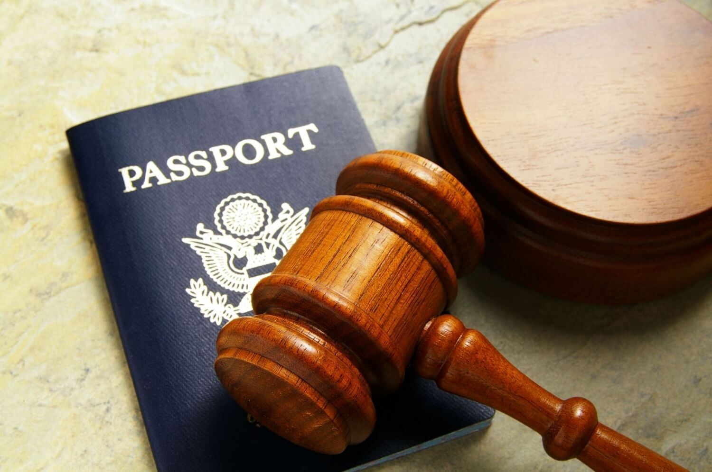
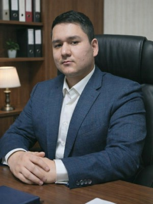
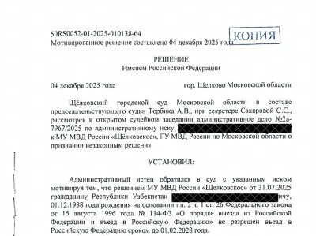
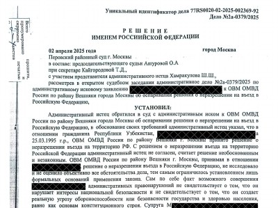
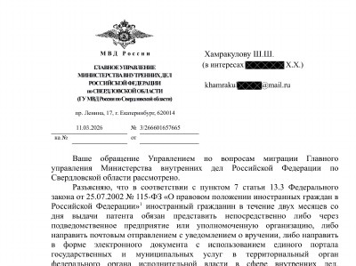
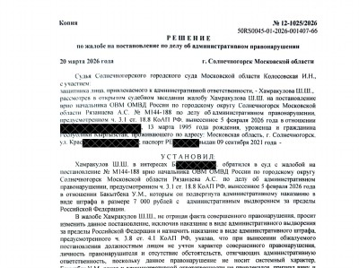
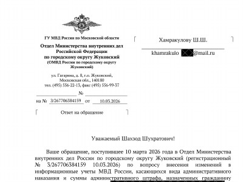

- Нарушения в сфере миграционного законодательства могут совершаться как иностранными гражданами, так и юридическими лицами.
- В первом случае в интересах нарушителей, выдворяемых лиц или лиц в отношении которых имеется запрет на въезд в РФ могут выступать как сами мигранты, так и их родственники. При этом, родственник может быть гражданином России. В таких и во многих других случаях есть законные возможности оспорить депортацию или снять запрет на въезд в Российскую Федерацию.
- Во втором случае, нарушителями миграционных правил могут быть юридические лица и ИП, являющиеся работодателями иностранных граждан. В этих случаях, предусмотрены более высокие штрафы.
Чем помогает адвокат по миграционным делам ?
-
разъясняет вопросы миграционного законодательства
-
направляет запросы в ведомства о наличии запрета на въезд
-
обжалует протоколы об административном выдворении
-
принимает участие в судебных слушаниях
-
оформляет необходимые документы в миграционные органы
-
получает решение в суде, обжалует его при необходимости
Помощь миграционного юриста8 (925) 502-40-09
Услуги миграционных юристов и адвокатов.
патента, РВП, ВНЖ. ⟶ Снятие с реестра контролируемых
лиц. ⟶ Запрос причин запрета/отказа
на въезд в РФ. ⟶ Снятие запрета на въезд в РФ. ⟶ Отмена выдворения/депортации. ⟶ Защита мигрантов в суде. ⟶ Защита работодателя в суде
по миграционным нарушениям. ⟶ Защита интересов мигранта
по административным делам. ⟶
Консультация юриста по
миграционным вопросам
Направить заявку в Telegram
Помощь миграционного юриста работнику при выдворении и депортации.
Для начала разберемся, что такое выдворение? Выдворение применяется судом в случае административных правонарушений мигрантами на территории РФ.
Судья назначает либо принудительное выдворение, либо принимает решение о контролируемом самостоятельном выезде мигранта. Однако часто выдворение иностранцев, имеющих в России семью, может нарушить право на семейную жизнь, которое охраняется Конституцией РФ и Международными Конвенциями о семье.
Без адвоката будет сложно доказать наличие обстоятельств, свидетельствующих о невозможности применения выдворения, собрать необходимые доказательства. Ситуация осложняется тем, что уже после выдворения сотрудники миграционной службы выставляют и запрет на въезд сроком на 5,10 лет, о чем мигранта уже не уведомляют.
Помощь миграционного юриста работодателю.
Известно, что ответственность работодателя за прием иностранных работников без документов или в отсутствии какого-либо документа весьма серьезная: штраф составит до 1 000 000 рублей, могут и вовсе применить административное приостановление деятельности на срок от 14 до 90 суток.
В случае не уведомления ГУВМ о заключении трудового договора с мигрантом работодателю грозит штраф: 400 тыс. до 800 тыс; приостановление деятельности организации; штраф на должностное лицо от 35 тыс. до 50 тыс.
Не секрет, что порой работодатели доходят до банкротства, не располагая средствами для погашения огромных штрафов.
В случае, если Ваша организация уже столкнулась с проблемой нелегального трудоустройства мигрантов, с проверкой правоохранительных органов, сопровождающейся выдворением мигрантов и привлечением Вашей организации к ответственности, советуем незамедлительно обратиться к юристу, который выработает грамотную позицию защиты с тем, чтобы минимизировать риски, связанные с трудоустройством мигрантов.
Чтобы избежать негативных последствий по вопросам выдворения или депортации, советуем незамедлительно обращаться к специалистам - юристу по миграционным вопросам.
Каковы преимущества обращения к адвокатам в этой области ? Только адвокатская деятельность, на сегодняшний день, является единственной квалифицированной юридической помощью в РФ и только адвокат несет персональную ответственность за свои действия и заинтересован в решении Вашей проблемы как квалифицированный специалист в связи со своим статусом.
Наши юристы по миграционным вопросам.

Хамракулов Шухрат Толибович
Адвокат

Серебрякова Наира Геворковна
Адвокат

Хамракулов Шахзод
Юрист, Стажер адвоката
Отзывы доверителей о нашей работе.


Запись на он-лайн консультацию
миграционного юриста
миграционного юриста
Полезные статьи по миграционным вопросам
Миграционная амнистия для граждан Украины, ДНР, ЛНР.
Гражданство РФ для граждан Украины, ДНР, ЛНР.
Гос. органы, которые вправе установить запрет на въезд в РФ.
Стоимость услуг миграционного юриста
Наша практика по миграционным вопросам.

Отмена решения МУ МВД России «Щелковское» о неразрешении въезда в РФ гр Узбекистана. Апелляционная жалоба УМВД оставлена без удовлетворения.

Оспаривание решения ОВМ ОМВД России по району Вешняки города Москвы о неразрешении на въезд в Российскую Федерацию. Иск удовлетворен, запрет на въезд в РФ гражданину Узбекистана снят.

Решение МВД об аннулировании патента было отменено во внесудебном порядке самим органом миграционного контроля.

Оспорено решение начальника УМВД о привлечении гр Казахстана к административной ответственности с применением административного выдворения ща пределы страны. По результатам поданной юристом жалобы, суд вынес решение о замене выдворения самостоятельным контролируемым выездом из страны.

После подачи обращения в ОМВД Жуковский МО, было внесено изменение в решение об административном выдворении за пределы страны и заменено на штраф без выдворения.
Отмена распоряжения о нежелательности пребывания.
Суд обязал МВД определить срок нежелательности пребывания. Апелляционная инстанция согласилось с мнением суда первой инстанции и оставила в силе решение суда.
Дело об отмене распоряжения УФСКН о нежелательности пребывания.
Гражданин республики Узбекистан обратился к адвокату с целью отменить распоряжение ФСКН России «О нежелательности пребывания (проживания) в РФ гражданину Республики Узбекистан ФИО». Адвокат обратился в Замоскворецкий районный суд г.Москвы с административным исковым заявлением о признании Распоряжения ФСКН России незаконным, в связи с тем, что в Распоряжении отсутствует указание на срок нежелательности пребывания в РФ иностранного гражданина, что является незаконным.
Суд обязал МВД России установить иностранному гражданину срок нежелательности пребывания в РФ, поскольку решение о нежелательности пребывания в отношении иностранца, судимого на территории РФ, должно действовать только на период судимости, а не бессрочно.
Дело о снятии запрета МВД студенту.
Гражданину Республики Конго был поставлен запрет по линии МВД России в связи с нарушением миграционного законодательства. Так, решением о неразрешении въезда в Российскую Федерацию УВМ ГУ МВД России по Свердловской области ему был не разрешен въезд в РФ в соответствии с п. 8 ст. 26 ФЗ от 15 августа 1996 года 114-ФЗ «О порядке выезда из Российской Федерации и въезда в Российскую Федерацию».
Адвокатам удалось убедить суд в незаконности принятого МВД решения и решением суда вынесенное УВМ МВД России решение о неразрешении въезда в РФ было признано незаконным. Студент сможет вернуться в РФ, продолжить обучение в ВУЗе и трудоустроиться впоследствии.
Дело об ограничении въезда И.И. в Россию.
В отношении Клиента И.И. было вынесено судебное решение об ограничении въезда на территорию РФ. Клиент не знал о дате и месте вынесения указанного решения, установил только на границе, что ему отказано во въезде. Адвокат Коллегии направил запрос в Миграционный отдел и установил реквизиты решения и основания запрета на въезд в страну для И. Обратившись в суд с обжалованием отказа во въезде в страну, адвокат получил решение суда о снятии запрета на въезд.
Дело о привлечении к административной ответственности ИП за привлечение иностранного труда.
ИП было привлечено к административной ответственности за привлечение иностранного труда. Вынесено 40 протоколов со штрафом за каждый в размере 400 000 рублей.В результате обжалования адвокатом Коллегии постановления административного органа в суд, решение было изменено с наложением предупреждения на ИП.
Дело об оспаривании нежелательности пребывания иностранного гражданина в РФ.
В отношении доверителя Коллегии — иностранца, органами Роспотребнадзора вынесено решение о нежелательности его пребывания на территории страны ввиду его заболевания туберкулезом.
Адвокату удалось установить отсутствие оснований для вынесения такого решения. Обратившись в суд с оспариванием состоявшегося решения, адвокат добился решение суда об отмене решения о запрете на въезд и пребывание на территории страны.
Отмена решения МВД о запрете въезда в Россию.
К адвокату обратилась гражданка России, у которой в отношении супруга, гражданина Узбекистана, было вынесено решение о закрытии въезда в РФ.Основанием явилось то, что супруг два и более раз совершил административные правонарушения в прошлом.
Адвокат направил соответствующие запросы, уточнил информацию по штрафам, запросил реквизиты для уплаты. Доверителем были оплачены все штрафы. Затем адвокаты обратились в суд с административным иском к ОМВД, просили суд отменить и признать незаконным решение органа МВД. Штрафы оплачены, семья -граждане России.
После упорной борьбы в суде с оппонентом -представителем ОМВД, который занял весьма активную позицию и поставил перед собой цель «засилить решение» своего руководства, адвокатам удалось убедить суд в незаконности и чрезмерной суровости применённого наказания в виде запрета на въезд в РФ. Суд услышал адвокатов, отменил решение ОМВД и признал его незаконным. Оппонентом было оспорено решение суда, однако оно было оставлено в силе, без изменения.
Нужен миграционный адвокат,
владеющий узбекским языком ?
Направить запрос в Telegram
Адвокат дает блогеру советы по вопросам миграционных прав.
Интерьвью адвоката Хамракулова Ш.Т.
Полезные советы миграционного адвоката!
Мигранту.
- Сделайте нотариальные копии всех своих документов, а также документов близких родственников.
- Оформите нотариальную доверенность родственнику или знакомому на представление Ваших интересов с правом передоверия.
- При задержании и рассмотрении материала в суде требуйте участия адвоката и переводчика в случае, если не владеете русским языком.
- Помните, что Вы можете отказаться от дачи показаний вообще и не свидетельствовать против себя.
Работодателю.
- Первым шагом при оформлении мигранта, временно пребывающего в Россию, будет постановка работодателя на учет в Главное управление по вопросам миграции (ГУВМ) МВД.
- Вторым шагом будет проверка документов работника. Потребуются следующие документы: Миграционная карта; Разрешение на работу; Загранпаспорт; Регистрация; ИНН; Полис ДМС; СНИЛС; Патент (если работник прибыл из страны, с которой у России установлен безвизовый режим).
- Если все документы в порядке, то третьим шагом будет заключение трудового договора с мигрантом.
- Обязательно в срок до 3 рабочих дней следует уведомить ГУВМ МВД РФ о заключении трудового договора с иностранным гражданином. Уведомление составляется по утвержденной форме на бланке, который утвержден Приказом ФМС России № 640 от 08.12.2014 год. Подать уведомление, составленное «от себя», не получится - в ГУВМ его не примут.
- Договор с мигрантом оформляется на неопределенный срок. По истечении срока разрешительных документов трудовой договор должен быть расторгнут. В договоре обязательно указание на разрешение на работу, патент, полис ДМС.
- Стоит проверять каждый месяц оплату патента своим иностранным работником (оплату он производит лично). Нередки случаи неуплаты патента (неуплатой считается даже нарушение срока на 1 день), что влечет серьезные штрафы для организации, привлекшей мигранта к работе, либо приостановление деятельности.
Новое в миграционном законодательстве
Опубликован Указ Президента Российской Федерации от 22.09.2025 № 670
"О приеме в гражданство Российской Федерации"
По новому Указу Президента РФ об упрощенном порядке приема в гражданство иностранных граждан неподдерживающих уклад своей страны принято в гражданство РФ 8 человек.
Экс-помощница Байдена Тара Рид получила гражданство России Она неоднократно говорила, что живёт в стране гораздо лучше чем в США и здесь у неё больше свобод.
Американку Тару Рид, которая в 1990-х годах была помощницей Джо Байдена получила гражданство Российской Федерации. Об этом говорится в указе президента страны Владимира Путина, опубликованного на сайте правовых актов.
Тара Рид переехала в Россию в 2023 году. Спустя два года после переезда её пригласили на ПМЭФ-2025, где она участвовала в дискуссии о медиа в странах БРИКС. Экс-помощница Байдена неоднократно говорила, что живёт в стране гораздо лучше чем в США и здесь у неё больше свобод. О своём намерении получить российское гражданство Рид заявила 30 мая.
В Миграционное законодательство будут внесены следующие изменения
— нужно будет подтверждать не только владение русским языком, но и знание истории России и основ законодательства РФ. Не потребуется подтверждение лицами, достигшими 70 лет и инвалидами первой группы;
— приобрести гражданство РФ в "упрощенном" (без требования к сроку проживания по ВНЖ, но с требованием иметь ВНЖ) порядке смогут иностранные граждане, которые:
- родились на территории РСФСР и состояли в прошлом в гражданстве СССР;
- имеют родственников по прямой восходящей линии, родившихся или постоянно проживавших на территории РСФСР либо территории, относившейся к Российской империи или СССР, в пределах государственной границы РФ;
- имеют хотя бы одного родителя - гражданина России, проживающего в России;
- имеют сына или дочь, являющихся гражданами России и проживающих в России (требования к возрасту не указаны);
- состоят в браке с с гражданином России, проживающим в России, и имеют общего ребенка;
- получили диплом с отличием об окончании высшего учебного заведения по очной форме обучения и с гос. аккредитацией образовательной программы;
- получили образование не ниже среднего профессионального и в совокупности не менее 1 года осуществляют трудовую деятельность в РФ;
- являются лицами без гражданства, ранее имевшим гражданство СССР;
- являются участниками Госпрограммы переселения.
По вопросу продления срока пребывания для всех иностранных граждан, которые по состоянию на 30.09.2021 г. находились в России легально, т.е. имели регистрацию по месту пребывания или месту жительства, срок действия которой оканчивался в период с 15.03.2020 г. по 30.09.2021 г.
Согласно разъяснению ГУВМ МВД России, сроки пребывания и проживания всех этих граждан по-прежнему продлеваются автоматически. И эти граждане имеют право обратиться с заявлениями о предоставлении государственных услуг в сфере миграции.
Если вам отказывают в предоставлении этих услуг, нет никакого смысла писать в группе и других соцсетях об этом. Лучше потратить это время на обращение в ГУВМ МВД России для получения адресного ответа.
МВД РФ с 29 декабря начнет выдавать трудовым мигрантам и прибывшим на длительное время в Россию иностранцам пластиковые карты, в том числе с электронным носителем информации о прохождении обязательной дактилоскопии и фотографирования
Согласно приказу МВД РФ, пластиковые карты с электронным носителем будут выдавать при наличии технической возможности, в остальных случаях документ будет оформлен без него.
Пластиковые карты с электронным носителем будут выдавать при наличии технической возможности, в остальных случаях документ будет оформлен без него. "Настоящий приказ вступает в силу с 29 декабря 2021 года", - говорится в документе.
Пластиковая карта с электронным носителем размером 5,6 на 53,98 мм будет состоять из лицевой и оборотной сторон. На лицевой стороне будет размещаться цветная или черно-белая фотография иностранного гражданина размером 30 на 40 мм. Она будет содержать идентификационную нумерацию документа, фамилию, имя, отчество, дату рождения и пол. На обратной стороне будут указаны сведения о гражданстве иностранца, документе, удостоверяющим личность. Также там будет размещен чип в виде микросхемы с бесконтактным интерфейсом, содержащий сведения об иностранном гражданине, которому выдан данный документ. Кроме того, чип будет содержать электронное изображение папиллярных узоров двух пальцев рук, пригодных для идентификации.
Иностранные туристы смогут оформить многократные визы в Россию на срок до 6 месяцев
Соответствующее постановление Правительства опубликовано на официальном интернет-портале правовой информации.
Согласно документу, теперь однократная и двукратная визы для иностранных туристов будут действительны в течение трех месяцев. Ранее срок их действия составлял один месяц. Помимо этого, для туристов будут доступны многократные визы на срок до полугода.
Чтобы получить визу на 6 месяцев, туристы должны получить подтверждение туроператора, который состоит в едином федеральном реестре туроператоров, или забронированный номер в гостинице, внесенной в федеральный перечень классифицированных гостиниц.
Быстрое оформление гражданства РФ для разных стран.
1. Республика Беларусь.
2. Украина, Казахстан, Молдова.
3. Украина (Донецкая и Луганская области, ЛДНР).
4. Киргизия (четырехстороннее соглашение).
1. Республика Беларусь
- Подача на ВНЖ, срок рассмотрения 3 мес.
- Подача на гражданство РФ (сразу после получения ВНЖ), срок рассмотрения 3 мес.
Общий срок - 6 мес.
2. Украина, Казахстан, Молдова
- Подача на РВП без учёта квоты на основании гражданства Украины, Казахстана, Молдовы, срок рассмотрения 2 мес.
- Подача на ВНЖ на основании РВП (через 8 мес. после получения РВП), срок рассмотрения 4 мес.
- Подача на гражданство РФ (сразу после получения ВНЖ) на основании своего гражданства, срок рассмотрения 3 мес.
Общий срок - чуть меньше 1.5 года.
3. Украина (Донецкая и Луганская области, ЛДНР)
- Подача на РВП (на основании украинского гражданства, без учёта квоты), срок рассмотрения 2 мес. Если уже есть ВУ, то подаётся сразу на гражданство РФ (этап РВП и ВНЖ пропускается).
- Этап ВНЖ пропускается, сразу на гражданство РФ.
- Подача на гражданство РФ (сразу после получения РВП/ВНЖ или ВУ) на основании Указа № 187, срок рассмотрения 3 мес.
Общий срок - срок 3-6 мес.
4. Киргизия (четырехстороннее соглашение)
- Подача на РВП по квоте или без (нужны основания), срок рассмотрения 2 мес.
- Подача на ВНЖ на основании РВП (через 8 мес. после получения РВП).
- Подача на гражданство РФ (сразу после получения ВНЖ) на основании четырехстороннего соглашения (должен быть один из близких родственников гражданин РФ: супруг(а) заявителя, один из его родителей или усыновителей, ребенок, в том числе усыновленный, а также родные сестра, брат, дед или бабушка, внук или внучка заявителя), срок рассмотрения 3 мес.
Общий срок - 1.5 года.
В некоторых случаях можно перепрыгнуть этап РВП, получив сразу ВНЖ, например, по родителю или ребёнку гражданину РФ. Основания можно менять от этапа к этапу, например, подать на ВНЖ на основании ребёнка гражданина РФ, а на гражданство РФ подавать по казахскому гражданству.
В сроках не учитывается ожидание в очередях и подготовка документов (у кого-то на это уходит 1 день, у кого-то несколько месяцев).
За нарушения при приёме у мигрантов экзаменов по русскому языку как иностранному, истории России и основам законодательства РФ ввели административное наказание. Максимальная сумма штрафа составит 300 тысяч рублей
Федеральный закон от 30 декабря 2020 года № 531-ФЗ вступил в силу 29 июня 2021.
Поправки в Кодекс об административных правонарушениях ужесточают ответственность за нарушение требований к проведению экзамена по русскому языку как иностранному, истории России и основам законодательства РФ. Так, за нарушение методики расчёта стоимости услуг, порядка и сроков хранения сертификатов об итогах экзаменов штраф для должностных лиц от пяти до 10 тысяч рублей, для юрлиц — от 50 до 100 тысяч рублей
Административную ответственность ввели и за нарушение порядка выдачи сертификата о сдаче экзамена. Штраф для должностных лиц составит от 15 до 20 тысяч рублей; для юридических — от 100 до 200 тысяч рублей.
За нарушение процедуры проведения тестирования либо несоблюдение при тестировании установленных требований к минимальному уровню знаний штраф для должностных лиц составит от 20 до 30 тысяч рублей, для юрлиц — от 200 до 300 тысяч.
Также предусмотрена ответственность за несвоевременную подачу информации в Федеральный реестр сведений о документах об образовании, квалификации и обучении. Для должностных лиц предлагается ввести штраф за это до 15 тысяч рублей и для юрлиц — до 50 тысяч рублей.
Мигрантов обяжут подписывать "соглашение о лояльности" с правилами пребывания в России
В МВД пояснили, что мигрант, подписывая "соглашение о лояльности", подтверждает свою информированность, в том числе о последствиях несоблюдения установленных правил, дает согласие не причинять ущерб России.
Кроме того, будет взято обязательство оплатить расходы, связанные с возможной высылкой за пределы страны иностранного гражданина, если им будут нарушены условия соглашения. "Согласно проекту закона, подписание соглашения о лояльности предполагается иностранными гражданами, въезжающими в РФ в визовом порядке, одновременно при подаче заявления о выдаче (оформления) визы на въезд в РФ, в том числе в электронной форме"
Проект закона предусматривает при подписании соглашения въезжающими в Россию без визы иностранными гражданами проведение обязательной государственной дактилоскопической регистрации.
Совфед одобрил закон об увеличении срока действия виз для близких родственников россиян
Совет Федерации одобрил на пленарном заседании в среду закон об увеличении срока действия частных виз для близких родственников граждан РФ.
Документ дает возможность оформлять многократные долгосрочные частные визы на основании письменного заявления гражданина РФ о предстоящем визите в Россию его родственников без необходимости оформления приглашений через территориальные органы МВД.
под категорию близких родственников попадают супруги, родители, дети, усыновители, усыновленные, братья и сестры, дедушки, бабушки и внуки. Для таких иностранных граждан увеличивается срок действия многократных частных виз до одного года. "При этом исключается из действующего законодательства ограничение, согласно которому суммарный срок пребывания иностранного гражданина на территории Российской Федерации по многократной визе не должен превышать 90 дней в течение каждого периода в 180 дней", говорится в пояснительной записке.
Закон уточняет, что обыкновенная частная виза выдается на срок до трех месяцев иностранному гражданину, въезжающему в РФ в целях экстренного лечения либо в связи с тяжелой болезнью или смертью близкого родственника. Если речь идет о прохождении лечения и сопровождении больного, то виза будет выдана на срок до года.
Также законом предусмотрена возможность пребывания в стране по данной визе членов семьи, детей, включая нетрудоспособных совершеннолетних детей иностранцев, которые прибыли в РФ с целью обучения по программам среднего профессионального или высшего образования или для работы по профессии в качестве квалифицированного специалиста, имеющего право на получение гражданства РФ в упрощенном порядке.
Пандемия коронавируса пагубно сказалась не только на гражданах России. Пострадали и мигранты, временно или постоянно пребывающие в Россию для работы. Мигранты оказались заложниками сложившейся ситуации в прямом смысле. Ведь они лишены возможности как работать на законных основаниях, так и уехать домой - границы всех стран закрыты. Многие остались с семьями на улице в буквальном смысле слова- наймодатели жилых помещений отказываются предоставлять им отсрочку по оплате жилья. Банки не предоставляют кредиты.
18 апреля 2020 г. президент России Путин В.В. подписал Указ №274 о привлечении иностранной рабочей силы в условиях пандемии. Согласно Указу на период с 15 марта по 15 июня 2020 года (на 3 месяца) приостановлено течение сроков временного пребывания, постоянного и временного проживания для мигрантов. Также продлены сроки, на которые мигранты должны быть поставлены на учет или зарегистрированы по месту жительства. Речь идет о сроках, которые истекают в указанный период - в период пандемии коронавируса.
Помимо этого, приостановлены сроки действия документов, истекающих в период карантина, а именно: визы, РВП, ВНЖ, миграционная карта, разрешение на работу, патент, разрешение на привлечение иностранных работников. Данные документы продлеваются.
Кроме этого, упрощен порядок приема на работу мигрантов на период действия режима повышенной готовности. Так, работники-мигранты будут приниматься на работу в отсутствие разрешительных документов-патента или разрешения на работу.
В период до 15 июня 2020 года мигранты не могут быть выдворены, лишены статуса беженца, лишены временного убежища на территории России, в отношении иностранцев не могут быть приняты решения о нежелательности пребывания (проживания), аннулировании виз, РВП, ВНЖ, патентов. Если мигранта уже выдворили или депортировали, он может оставаться в стране до указанного срока.
Важно !
Сроки и документы продлеваются автоматически! Сейчас нет необходимости куда-либо ходить для того, чтобы подать заявления. Указания Президента и глав субъектов федерации (регионов) касательно соблюдения карантина и самоизоляции обязательны к исполнению всеми гражданами, в том числе иностранцами. При этом после окончания срока самоизоляции и открытия территориальных отделов по вопросам миграции, мигрантам необходимо обратиться с заявлением о продлении срока пребывания и срока действия виз.
Образцы полезных документов
Прием миграционного адвоката
Записаться в Telegram
Полезная информация и новости по миграционному праву
В справке должны быть указаны все судимости, включая детали вины (умысел или неосторожность), а также подтверждено отсутствие уголовного преследования. Важно, чтобы справка была выдана не более чем за три месяца до подачи заявления. Обсуждение проекта продлится до 18 октября.
С патентом для Москвы можно работать в Московской области и наоборот с патентом для Московской области можно работать в Москве
СОГЛАШЕНИЕ от «12» августа 2025 года № 77-1754 между высшими должностными лицами города федерального значения Москвы и Московской области об осуществлении иностранными гражданами трудовой деятельности на основании патентов, выданных на территории города Москвы или Московской области, и о привлечении работодателями или заказчиками работ (услуг) таких иностранных граждан к трудовой деятельности в пределах территории города Москвы или Московской области
1.2.1. Работодатели и заказчики работ (услуг) имеют право привлекать к трудовой деятельности иностранных граждан, осуществляющих трудовую деятельность на основании патента, выданного иностранному гражданину (в том числе до дня вступления в силу настоящего Соглашения) в одном субъекте Российской Федерации - Стороне настоящего Соглашения, на территории другого субъекта Российской Федерации - Стороны настоящего Соглашения, в порядке и на условиях, установленных Федеральным законом от 25 июля 2002 г. № 115-ФЗ «О правовом положении иностранных граждан в Российской Федерации».
1.2.2. Иностранные граждане, осуществляющие трудовую деятельность на основании патента, выданного иностранному гражданину (в том числе до дня вступления в силу настоящего Соглашения) в одном субъекте Российской Федерации – Стороне настоящего Соглашения, имеют право осуществлять трудовую деятельность у работодателя или заказчика работ (услуг), осуществляющих свою деятельность на территории другого субъекта Российской Федерации – Стороны настоящего Соглашения, в порядке и на условиях, установленных Федеральным законом от 25 июля 2002 г. № 115-ФЗ «О правовом положении иностранных граждан в Российской Федерации».
Указом Президента России продлена процедура легализации иностранных граждан до 10 сентября 2025 года.
Указам Президента России продлены сроки подачи документов мигрантами для легального пребывания на территории и страны. Таким образом, у всех мигрантов есть возможность легализовать свое присутствие до истичения продленного срока.
С начала 2024 года органами внутренних дел Российской Федерации аннулировано более 43 тысяч патентов, выданных иностранным гражданам, которые своевременно не подали уведомление об осуществлении трудовой деятельности. По сравнению с прошлым годом число аннулированных патентов выросло в три раза.
Соответствующее правовое регулирование осуществляется с 7 января 2024 года в соответствии с Федеральным законом от 10 июля 2023 г. № 316-ФЗ «О внесении изменений в Федеральный закон «О правовом положении иностранных граждан в Российской Федерации». Теперь иностранный гражданин в течение двух месяцев со дня выдачи патента обязан уведомить об осуществлении трудовой деятельности территориальный орган МВД России, который выдал патент.
Уведомление об осуществлении трудовой деятельности можно подать почтовым отправлением с уведомлением о вручении либо через Единый портал государственных и муниципальных услуг (функций), а также в филиал ФГУП «ПВС» МВД России.
Если уведомление не подано, это означает утрату иностранным работником законных оснований для нахождения и работы в России. Также это налагает обязанность выезда за пределы Российской Федерации, неисполнение которой является основанием для принудительной высылки из нашей страны.
Внесены изменения в Указ № 187, позволяющий жителям Запорожской и Херсонской областей Украины, имеющим в России РВП, ВНЖ, временное убежище или удостоверение беженца, получить гражданство России!
Их супруги, дети и родители, имеющие любое гражданство и любой статус пребывания (проживания) в РФ, так же могут получить российское гражданство в соответствии с этим указом.
Кроме того, теперь дети-сироты и дети, оставшиеся без попечения родителей, недееспособные лица, являющиеся гражданами ДНР, ЛНР и Украины, могут получить гражданство России в соответствии с Указом № 187, минуя этапы РВП и ВНЖ.
В. Путин подписал Указ Президента Российской Федерации от 04.04.2022 г. № 183 "Об ответных мерах визового характера в связи с недружественными действиями иностранных государств".
Эти меры были анонсированы не так давно, и вот они уже вступили в силу. Этим указом запрещается въезд в Россию и выдача виз официальным лицам и журналистам государств ЕС, Норвегии, Исландии и Швейцарии. Кроме того, силовые ведомства смогут ввести персональные ограничения на въезд в Россию иностранных граждан и лиц без гражданства, совершающих недружественные действия в отношении Российской Федерации.
Иностранцам могут разрешить становиться на миграционный учет через "Госуслуги"
Иностранные граждане могут получить возможность самостоятельно становиться на миграционный учет по месту пребывания в России через портал "Госуслуги" или его мобильное приложение.
По словам источника, во всех случаях оформления миграционного учета в течение трех рабочих дней лицо, принимающее иностранного гражданина, будет уведомляться сотрудниками МВД. "Если выяснится, что собственник не предоставлял иностранцу помещение для проживания, то нарушитель будет привлекаться к административной ответственности вплоть до высылки из России", - добавил он. Такие изменения будут способствовать повышению качества предоставления услуги по миграционному учету, сделают ее более удобной, а также сократят трудозатраты со стороны сотрудников органов регистрационного учета. Кроме того, это должно позволить сократить количество случаев фиктивной постановки на миграционный учет иностранцев, отметил собеседник агентства.
Сообщить МВД о заключении или расторжении трудового договора с мигрантами можно через Госуслуги
На Госуслугах появился сервис «Уведомления по трудовым мигрантам». С его помощью можно отправлять в подразделения МВД электронные уведомления: о заключении и расторжении трудового договора с иностранными гражданами; об обязательствах по выплате зарплаты иностранным гражданам — высококвалифицированным специалистам.
Чтобы направить уведомление в МВД, работодателю нужно заполнить форму на Госуслугах и подписать ее электронной подписью. Посещать ведомство не нужно.
Как многим известно, с 29 декабря 2021 г. в Федеральный закон от 25.07.2002 г. № 115-ФЗ «О правовом положении иностранных граждан в Российской Федерации» вносится ряд изменений, и довольно существенных.
Во-первых, срок временного пребывания иностранного гражданина, работающего в России без патента или разрешения на работу (чаще всего это граждане государств-участников ЕАЭС), а также членов его семьи, продлевается на срок действия этого трудового либо гражданско-правового договора. В случае, если такой договор является бессрочным, то срок временного пребывания продлевается на срок до одного года с даты въезда в Россию. Указанный срок временного пребывания может быть неоднократно продлен без выезда за пределы России, но не более чем на один год для каждого такого продления. Членами семьи в данном случае признаются супруг (супруга), дети и родители. Последние – при условии их нахождении на иждивении иностранного работника.
Во-вторых, срок временного пребывания «безвизового» иностранца, являющегося членом семьи гражданина России или иностранного гражданина с ВНЖ, продлевается на срок до одного года с даты въезда в Россию. Указанный срок временного пребывания может быть неоднократно продлен без выезда за пределы России, но не более чем на один год для каждого такого продления. При этом у указанного гражданина России или иностранца с ВНЖ должна быть регистрация по месту жительства («прописка»). Членами семьи в данном случае признаются супруг (супруга), дети, родители, дедушки, бабушки и внуки.
В-третьих, срок временного пребывания иностранного гражданина, признанного носителем русского языка, продлевается на девяносто дней со дня признания его носителем русского языка. Этого времени вполне достаточно для подачи заявления о выдаче ВНЖ или РВП.
В-четвертых, иностранные граждане, прибывшие в Россию работать, обязаны пройти дактилоскопию и фотографирование в течение 30 дней с даты въезда либо при обращении за патентом/разрешением на работу. Иностранные граждане, прибывшие без цели работать, но на срок более 90 дней (см. «во-первых» и «во-вторых»), обязаны пройти дактилоскопию и фотографирование в течение 90 дней. Осуществить эти процедуры нужно будет однократно. По результату будет выдан подтверждающий документ (в некоторых регионах – в форме карты с электронным носителем информации). Передавать сведения о прохождении дактилоскопии и фотографирования в МВД будет уполномоченный на это орган: в Москве – ММЦ, в большинстве остальных регионов – ФГУП ПВС МВД России. Для прохождения указанной процедуры нужно лично обратиться в МВД или уполномоченную организацию, предъявив документ, удостоверяющий личность, и медицинские справки.
В-пятых – как раз о медицинских справках. Иностранные граждане, прибывшие в Россию на работу, должны пройти медицинское освидетельствование в течение 30 дней либо при обращении за патентом/разрешением на работу. Прибывшие на срок более 90 дней без цели работать – в течение 90 дней. По окончании срока действия медсправок (90 дней) нужно будет пройти повторное освидетельствование в течение 30 дней. Результаты медосвидетельствования в МВД будут передавать уполномоченные организации (см. выше).
В-шестых, если не пройти процедуры дактилоскопирования и фотографирования, а также медицинское освидетельствование, то срок временного пребывания будет сокращен. А это значит, что нужно будет выехать из России.
Новые квоты объявлены
Опубликован Приказ Министерства труда и социальной защиты Российской Федерации от 25.11.2021 № 826н "О внесении изменений в приложения № 1 - 3 к приказу Министерства труда и социальной защиты Российской Федерации от 10 декабря 2020 г. № 878н "О распределении по субъектам Российской Федерации утвержденных Правительством Российской Федерации на 2021 год квот на выдачу иностранным гражданам, прибывающим в Российскую Федерацию на основании визы, разрешений на работу и приглашений на въезд в Российскую Федерацию в целях осуществления трудовой деятельности"
04.12.2021 года вступает в силу Указание Банка России от 11 октября 2021 г. № 5974-У “О внесении изменений в Указание Банка России от 13 сентября 2015 года N 3793-У "О минимальных (стандартных) требованиях к условиям и порядку осуществления медицинского страхования в части добровольного медицинского страхования иностранных граждан и лиц без гражданства, находящихся на территории Российской Федерации с целью осуществления ими трудовой деятельности"
Полисы ДМС трудовых мигрантов начнут оформлять в электронном виде
Скорректированы минимальные (стандартные) требования к условиям и порядку осуществления медицинского страхования в части добровольного медстрахования иностранных граждан и лиц без гражданства, находящихся на территории России с целью осуществления ими трудовой деятельности. В частности, предусмотрена возможность оформления страхового полиса ДМС трудовых мигрантов в электронном виде, а также прописана обязанность страховщиков при осуществлении ДМС трудовых мигрантов обеспечить возможность проверки наличия действующего договора ДМС (полиса) по его серии и номеру на своем официальном сайте.
Приказ Министерства внутренних дел Российской Федерации от 01.11.2021 № 799 "О внесении изменений в Административный регламент Министерства внутренних дел Российской Федерации по предоставлению государственной услуги по выдаче иностранным гражданам и лицам без гражданства разрешения на временное проживание в Российской Федерации, утвержденный приказом МВД России от 8 июня 2020 г. № 407"
Изменения:
В заявлении на РВП изменения: в пункте 11 дополнили про свидетельство о браке выданное в иностранном государстве. Убрали в конце заявления для безвизовых стран, что обязуются предоставить мед. справки;
Убрали пункт требование предоставить мед. справки, исключили данный пункт, но добавили справки в пункт "42. Для предоставления государственной услуги заявитель по собственной инициативе вправе предоставить:" и добавили в пункт "46. Основаниями для отказа в приеме заявления, поданного в форме электронного документа с использованием Единого портала, являются:". Получается, данные будут брать автоматически из общей базы;
Дополнили пункт о подтверждении русского языка: уточнили, какими документами можно дополнительно подтвердить знание русского языка (пункт 1.7). Можно подтвердить документом выданным военной профессиональной организацией;
При подаче несовершеннолетнему заменили "Свидетельство о рождении" на "Документ, подтверждающий факт регистрации рождения";
Для родившихся в РСФСР убрали упоминание о свидетельстве о рождении выданное в России, оставили только в РСФСР;
Для подающих по родителю, детям граждан РФ заменили "Свидетельство о рождении" на "Документ, подтверждающий факт регистрации рождения";
"Свидетельство о рождении" на "Документ, подтверждающий факт регистрации рождения";
По диплому с отличием установили даты выдачи с 10 июля 1992 года по 31 декабря 1995 года;
По браку заменили "Свидетельство о заключении брака" на "документ, подтверждающий факт заключения брака";
Имеющие гражданство СССР и окончившие ВУЗ в России разъяснили, какие именно дипломы, например, диплом о среднем профессиональном образовании, диплом бакалавра, диплом специалиста, диплом об окончании ординатуры и т.д.) (пункт 5.5);
Отсутствие регистрации в базе
Напоминаем, перед подачей заявления проверьте свою регистрацию, внесена она в базу или нет. Для этого необходимо обратиться в «Мои документы» или районный ОВМ по месту регистрации. По этой причине инспекторы отказывают в приёме документов, хотя это неправомерно, т.к. предоставляется документ подтверждающий вашу регистрацию в виде «Уведомления о постановке на миграционный учёт» (бумажка в клеточку) или штамп регистрации в паспорте или в ВНЖ, а отсутствие в каких-либо базах, это не забота соискателя, а внутренние дела МВД.
В случае отказа предоставить информацию о внесении вашей регистрации в базу, ссылайтесь на статью 6 Федерального закона № 109-ФЗ, где сказано, что Вы имеете право ознакомиться со своими персональными данными в базе, а также на получение в установленном порядке справок персонального характера в органах миграционного учета.
Федеральный закон от 18.07.2006 N 109-ФЗ "О миграционном учете иностранных граждан и лиц без гражданства в Российской Федерации"
Статья 6. Права иностранных граждан при осуществлении миграционного учета
Иностранные граждане при осуществлении миграционного учета имеют право:
- на ознакомление со своими персональными данными, содержащимися в государственной информационной системе миграционного учета;
- на защиту своих персональных данных, содержащихся в государственной информационной системе миграционного учета;
- на исправление своих персональных данных, содержащихся в государственной информационной системе миграционного учета, в случае обнаружения в них ошибок;
- на внесение изменений и дополнений в свои персональные данные, содержащиеся в государственной информационной системе миграционного учета;
- на получение в установленном порядке справок персонального характера в органах миграционного учета;
- на осуществление иных прав, предусмотренных настоящим Федеральным законом.
24.06.2021г.
Иностранцы уже на этой неделе смогут сделать в Москве COVID-прививку
Находящиеся в Москве иностранные граждане уже на этой неделе смогут сделать прививку от коронавируса, сообщил руководитель Департамента торговли и услуг Москвы.
Иностранцам разрешат с 28 июня посещать рестораны в Москве при предъявлении отрицательного ПЦР-теста на коронавирус, сообщили в правительстве столицы.
Зарпет на выдворение мигрантов. Подробнее ...
Президент РФ на время запретил выдворять иностранцев и ограничивать их въезд в РФ.
Все иностранные граждане, находящиеся в России, получили шанс легализоваться – даже те, кто давно нарушил сроки пребывания в стране. Для этого нужно обратиться в орган МВД с заявлением. Только надо успеть до 30 сентября 2021 г., пока действует запрет на выдворение и принятие решений об ограничении въезда в РФ
Утверждается новый сертификат по русскому языку, истории и основ законодательства РФ.
Опубликован Приказ Министерства науки и высшего образования Российской Федерации от 26.05.2021 № 400 "Об утверждении форм сертификата о владении русским языком, знании истории России и основ законодательства Российской Федерации на уровне, соответствующем цели получения разрешения на временное проживание или вида на жительство, разрешения на работу или патента, технических требований к нему, а также порядка выдачи указанного сертификата"
Сертификат выдаётся на территории РФ либо за её пределами организациями, осуществляющими образовательную деятельность, включенными в перечень организаций.
Сертификат выдаётся не позднее семи рабочих дней со дня проведения экзамена.
Сертификат вручается лично либо по доверенности.
ФИО иностранного гражданина заполняется буквами русского и латинского алфавита в соответствии с документом, удостоверяющим личность, в именительном падеже.
В случае утери сертификата, ошибок, изменения фамилии, выдаётся дубликат сертификата в течение 7 рабочих дней на основании заявления. В случае исключения из списка Минобрнауки РФ организации выдавшей сертификат, заявление направляется в Минобрнауки РФ.
Сертификат имеет серию и номер. Серия включает в себя:
первые 3 цифры порядковый номер организации выдавшей сертификат;
4-5-я цифры двузначный номер лицензии организации изготовителя бланка сертификата;
Сертификат имеет водяной знак "Россия" по всему полю, бумага имеет свечение под действием УФ-излучения и содержит не менее двух видов защитных волокон. На лицевой стороне сертификата ирисовый раскат с наложением двух фоновых сеток.
Заканчиваются сроки для подачи документов.
После 15.06.2021 иностранный гражданин обязан иметь основания для нахождения в РФ или обязан покинуть территорию РФ. МВД в жесткой форме даёт понять, что после 15.06.2021 не ожидается поблажек. Иностранному гражданину находящемуся в РФ без оснований грозит выдворение с запретом на въезд в РФ.
КоАП РФ Статья 18.8 предусматривает наказание за нарушение иностранным гражданином или лицом без гражданства правил въезда в Российскую Федерацию либо режима пребывания (проживания) в Российской Федерации.
влечет наложение административного штрафа в размере от двух тысяч до пяти тысяч рублей (в Москве и СПб 5-7 тыс руб) с административным выдворением за пределы Российской Федерации.
Граждане безвизовых стран могут урегулировать свой статус в РФ оформив патент, в Москве не требуется указания в миграционной карте цели визита «Работа», патент можно оформить с любой целью визита. Многие питают надежду, что после 15.06.2021 снова будет продлён Указ, но если этого не произойдёт, то иностранные граждане находящиеся в РФ без оснований подпадают под пункт 1.1 статьи 18.8 КоАП РФ.
Президент РФ подписал закон о выдаче виз без принципа взаимности
Президент РФ Владимир Путин подписал закон, разрешающий выдавать полугодовые туристические визы для иностранцев вне зависимости от визовой политики других государств в отношении россиян.
Ранее для въезда в Россию иностранцы могли получить визу сроком на один месяц или на полгода в зависимости от того, на какой срок выдают визы страны их гражданства. Это и имеется ввиду под формулировкой о принципе взаимности.
Документ предусматривает возможность замены необходимого для получения визы подтверждения о приеме организацией из единого федерального реестра туроператоров подтверждением о бронировании гостиницы.
МВД предложило иностранцам, оставшимся в РФ вследствие коронавирусных ограничений, урегулировать сроки пребывания до 15 июня
"Подразделения по вопросам миграции территориальных органов МВД России ориентированы об организации работы с иностранными гражданами (включая граждан стран СНГ), находящимися на территории РФ с нарушением установленного порядка пребывания, в том числе прибывшими с целями въезда, отличными от цели въезда "работа" и осуществляющими трудовую деятельность, в случае их обращения в целях урегулирования правового положения на территории РФ до 15 июня 2021 года", - говорится в сообщении.
В ведомстве также отметили, что в отношении такой категории лиц принимаются решения о продлении срока временного пребывания, постановке на учет по месту пребывания и оформлении соответствующих разрешительных документов.
"Иностранным гражданам необходимо в кратчайшие сроки обратиться в подразделение по вопросам миграции территориального органа МВД России по месту фактического нахождения с мотивированным заявлением о продлении срока временного пребывания в РФ и предъявить действительный документ, удостоверяющий личность, а также миграционную карту для проставления отметки о продлении срока временного пребывания на территории РФ", - отметили в ведомстве.
Список документов для подачи заявления о выделении квоты в июне 2021 г
- Распечатанный и заполненный бланк Заявления о выделении квоты (скачайте на сайте mc.mos.ru и распечатайте с двух сторон)
- Документ, удостоверяющий личность (паспорт)
- Документы, подтверждающие легальность нахождения в РФ: миграционная карта, регистрация (миграционный учёт по г.Москве).
Наказания работодателю за иностранного работника без документов и оформления
В погоне за дешевой рабочей силой, часто, работодатели прибегают к использованию труда иностранных работников.
При этом нарушая установленные законом для иностранных работников процедур оформления миграционных документов.
Работодателей чаще наказывают за следующие нарушения:
Отсутствие полного пакета документов;
Нарушение государственных нормативных требований охраны труда;
Уклонение от оформления трудового договора;
Необеспечение работников средствами индивидуальной защиты
Нарушение порядка оценки условий труда на рабочих местах.
Нарушение предусмотренных законом правил миграционного учета влечет за собой административный штраф и иные меры воздействия, как на работодателя, так и на рабочего-мигранта, при этом штрафы для работодателя юридического лица размер штрафов выше.
Актуализированы редакции распоряжений Правительства РФ 635-р и 763-р,
Положения регламентируют вопросы въезда иностранцев в РФ, а также выезда российских граждан за рубеж, в условиях действующих ограничений на фоне пандемии COVID-19.
В частности, расширена категория близких родственников из числа иностранных граждан, которые могут въезжать в РФ (супруги, родители, дети, родные братья и сёстры, дедушки, бабушки, внуки, усыновители и усыновлённые). Также есть изменения, касающиеся выезда граждан РФ из России.
Вопросы - ответы !
подскажите пожалуйста. Что нужно по мимо трудового договора для того ,что бы уведомить Миграционный центр о трудоустройстве иностранного гражданина?
Уведомить отдел по вопросам миграции, а не миграционный центр!!! А то еще отправите не по адресу, а вам штраф. Само уведомление, копия трудового, заверенная работодателем.
Подскажите, пожалуйста, какие документы нужны для подачи на ВНЖ по красному диплому магистратуры? Для гражданина КНР.
Необходимы следующие документы:
1. Справка о судимости
2. Аккредитация ВУЗа
3. Справка из ВУЗаа
4. Медицинское обследование + тест на коронавирус
5. 4 фотографии
6. Паспорт и перевод всех страниц (заверенное нотариусом)
7. Миграционная карта
8. Временная регистрация